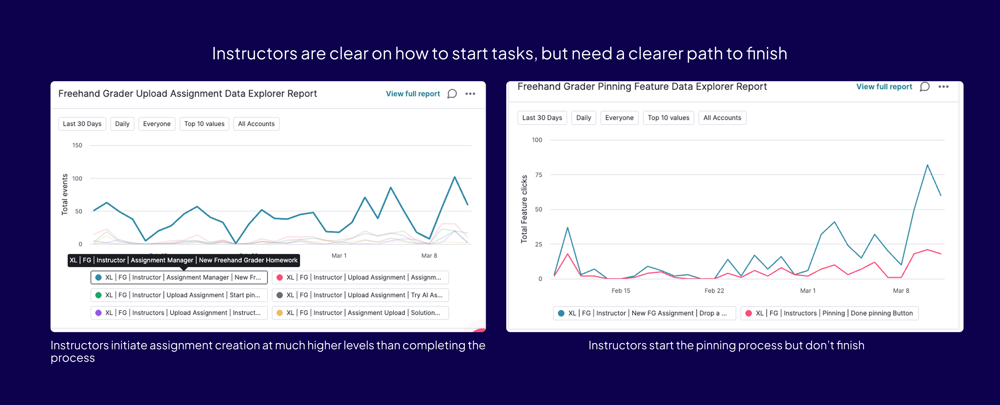
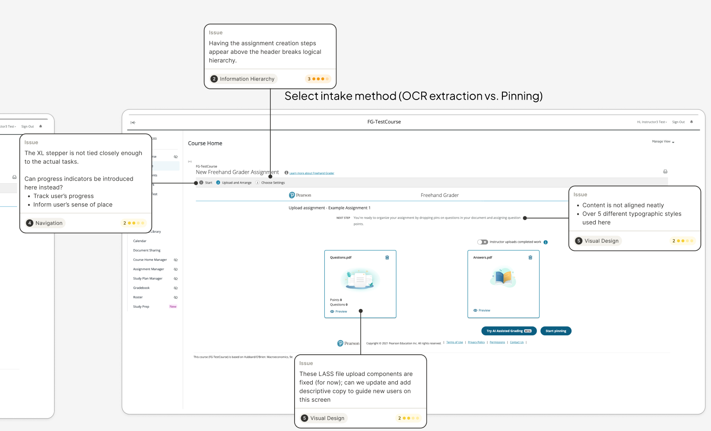
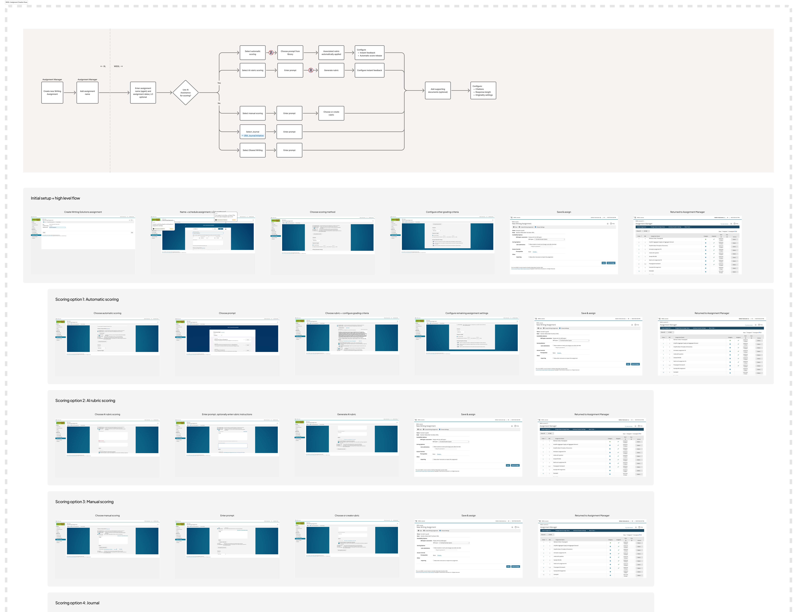
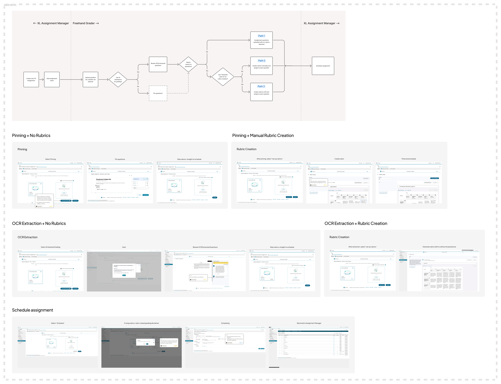
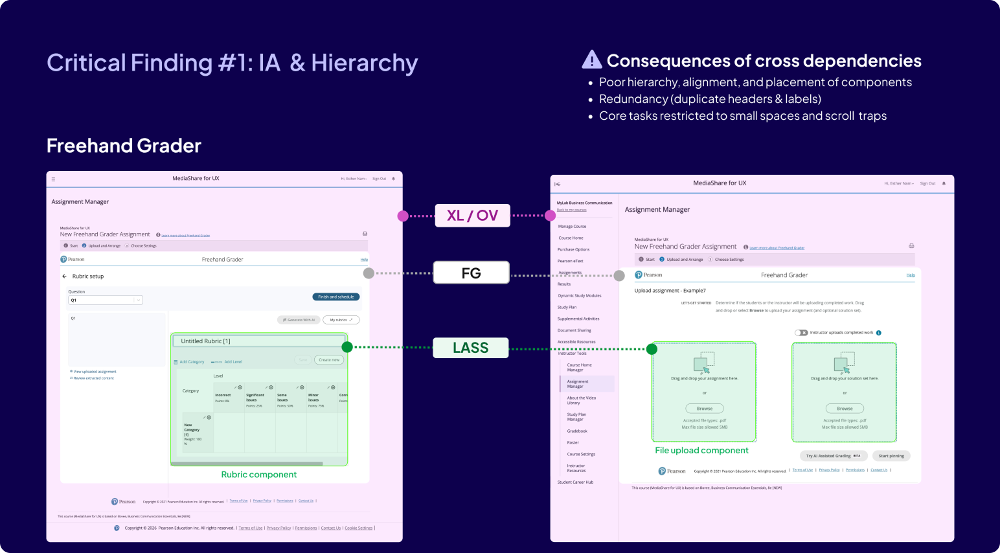
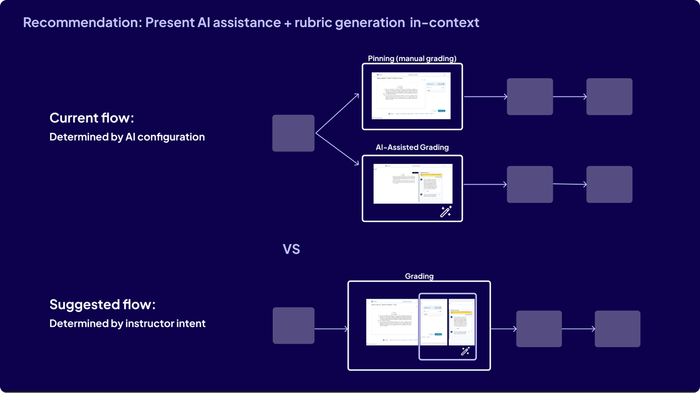

UX AUDIT/Pearson Higher Ed · "Generate" portfolio/March 2026
Mapping the friction points across Pearson's AI grading workflows.
A cross-product UX audit of assignment creation and grading flows across two products in Pearson's Higher Ed "Generate" portfolio, used as the connective tissue between research, product, engineering, and design.
RoleLead designer
TimelineMarch 2026
Scope2 products · instructor + student flows
OutcomeInformed 2 v1 redesigns + ongoing roadmap
01Impact
The audit became connective tissue across product, engineering, and design.
01
Drove two first-pass redesigns
Every short-term recommendation, persistent wayfinding, in-context guidance, progress indicators, visual consistency, translated into concrete design changes in the v1 redesigns of Writing Solutions and Freehand Grader.
02
Aligned cross-functional diagnosis
Named the root cause (information architecture shaped by tool constraints, not the task at hand) and tied it to business risk, adoption, support burden, trust, and revenue, giving the squad shared language for prioritization.
03
Anchored roadmap planning
Long-term recommendations continue to be referenced as the squad scopes future quarters and weighs feature priorities against structural debt.
04
Surfaced an unconsidered mobile opportunity
Opened a strategic conversation about reaching the 82–85% of Pearson users who enter through an LMS, a path the team hadn't previously prioritized.
Presented to cross-functional leadership across product, engineering, and design in March 2026; findings continue to be referenced in roadmap planning.
02Overview
What "Generate" promises, and why it wasn't landing.
Generate is a suite of digital tools for assigning and grading authentic assessments in higher education. Authentic assessments are valued for real-world relevance but time-intensive to set up and grade, so Generate's value prop is leveraging AI to save instructor time and enable authentic assessments at scale.
I audited two tools in the suite: Writing Solutions (for writing submissions) and Freehand Grader (for handwritten, uploaded solutions, usually STEM-related). Both share a mission to save instructors time while preserving pedagogical rigor and instructor judgment.
Despite impressive features, instructors were hesitating, abandoning flows, or taking longer than expected on core tasks. This friction directly undermines the time-savings value prop. I approached the audit as a strategic diagnostic of how product structure, system constraints, and legacy UI decisions were eroding instructor trust and efficiency.

Audit slide: Usage data from Pendo dashboards.
03Method
A strategic diagnostic, not a heuristic checklist.
I grounded the review in four lenses, prioritizing the instructor experience given its greater complexity and business impact.
01
Jobs-to-be-done analysis
Mapped instructor and student JTBDs at a high level. Surfaced the gap between what the product was structured to deliver and what users actually showed up to accomplish.
02
Information architecture & hierarchy
Audited screen-level IA across Writing Solutions and Freehand Grader. Identified competing systems and redundant containers driven by backend service boundaries.
03
Wayfinding, state, decision confidence
Traced multi-step flows for moments where progress, completion, and reversibility broke down, especially at AI-related decision points.
04
Funnel & abandonment data
Cross-referenced UX findings with Pendo dashboards to confirm hypotheses about where users dropped off and why qualitative friction matched quantitative attrition.

UX teardown of core instructor & student workflows, annotated issues across navigation, visual design, and help & documentation.

Writing Solutions, full instructor & student flows reviewed.

Freehand Grader, full instructor & student flows reviewed.
04Key Insights
Four patterns explained most of the friction.
01
Information architecture
The experience is organized around tools, not tasks.
Different backend services each assert themselves visually, producing competing headers, redundant containers, and fragmented attention. Instructors don't think in terms of products or systems; they think "I need to create an assignment" or "I need to finish grading". The experience often failed to support that mental model.

Critical Finding #1: IA & Hierarchy, showing how three backend systems (XL/OV, FG, LASS) layer visually inside a single instructor task.
Systems referenced
OV
The shell / container application that hosts learning experiences.
XL
The legacy web application that runs courseware.
LASS
Set of shared backend / service-level capabilities that have fixed UI components, which I could not modify (at least in the short term).
02
Wayfinding & state
Wayfinding and state break down when confidence matters most.
Many core workflows are multi-step and consequential, yet lack clear progress indicators, visible completion states, awareness of what's next, and safe ways to revise earlier decisions.
This forces instructors to commit early, especially around AI extraction and grading, without enough context to feel confident. The funnel data confirms this: the largest drop sits exactly at the moment users are asked to commit without preview.
03
AI framing
AI is framed as a risky fork, not a helpful partner.
AI capabilities are positioned as branching paths: AI vs. non-AI. That framing amplifies fear of choosing wrong, makes AI feel irreversible rather than assistive, and turns grading into a high-stakes configuration problem.
Instructors don't want to choose an AI workflow. They want to grade, with AI available where it's helpful.

Recommendation slide: re-frame AI as an in-context assist, not a branching path.
04
Polish & recovery
Small inefficiencies undermine the value proposition.
Editing layouts for questions and rubrics are constrained, in-context guidance is sparse, error messages explain what went wrong without showing how to recover, and small visual inconsistencies erode perceived quality. Each issue is minor on its own, but together they contradict the product's core promise of saving time.
Instructors don't want to choose an AI workflow. They want to grade, with AI available where it's helpful.
05Recommendations
Quick wins now, structural moves over the year.
Now · Q2–Q3
Quick wins
01
Introduce task-level navigation, a stepper or breadcrumbs aligned to assignment creation and grading, not to backend service boundaries.
02
Make state visible, progress, completion, and system readiness should each have a dedicated, persistent UI affordance.
03
Scaffold key decisions with clearer context, especially around AI and rubrics. Replace branching forks with progressive disclosure.
04
Strengthen in-context help and error recovery, explain what to do next, not just what went wrong.
Long term · 2026–2027
Structural moves
01
Use the EOY platform modernization, including iFrame removal and design system rollout, as the seam to realign the experience.
02
Design toward a unified Generate workflow across Freehand Grader, Writing Solutions, and MediaShare. Anchor in instructor tasks, not product lines.
03
Treat AI as ambient, not branching, surface AI capabilities inline at the moment of need, with manual override always available.
04
Open the mobile conversation, 82–85% of Pearson users enter through an LMS; mobile is a strategic adoption lever the team hadn't previously sized.
06Next steps
What this audit unlocked.
The audit findings directly influenced design decisions made in subsequent design iterations for Writing Solutions and Freehand Grader, and continue to be referenced for roadmap planning.